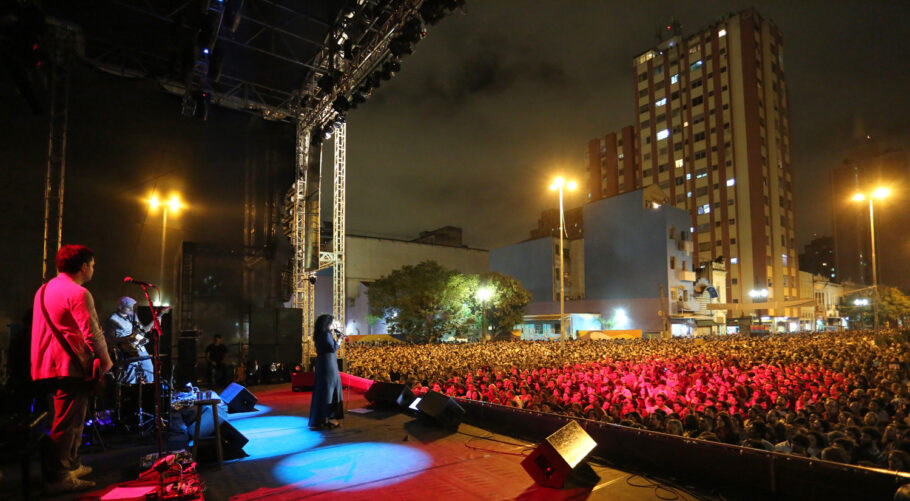

<!DOCTYPE html>
<html lang="en">
<head>
  <meta charset="UTF-8">
  <meta http-equiv="X-UA-Compatible" content="IE=edge">
  <meta name="viewport" content="width=device-width, initial-scale=1.0">
  <title>Document</title>
</head>
<body>
  
</body>
</html>


<title> AST HTML</title>
<html>
  
<head>
    <style>
    body {
      background-color: white;
    }
    


      h3{
     text-align: center;
     color: black;
    font-size: 40px;
    margin-left: 20px;


}

h6{

color: black;
text-align: center;
font-size: 20px;


}

p{

text-align: center;
text-justify: inter-word;
font-size: 25px;


}


h1{
   color: white;
   font-size: 80px;
   text-align: center;
   background-color: red;
  }
  .container{
 display: flex;
 justify-content: center;
}

h2{
    color: black;
    font-size: 40px;
    text-align: center;
    margin-left: 20px;

  }
 </style>

<h1> Jornal com café  &#9749; </h1>
 
<h6>Bem-vindo ao nosso site de notícias! Aqui você encontra as últimas novidades e acontecimentos da nossa região. 
    Nossa equipe de jornalistas trabalha para trazer a você informações precisas e relevantes sobre política, economia, cultura, esportes e muito mais.
     Fique por dentro dos fatos mais importantes do momento, com análises aprofundadas e reportagens exclusivas. 
     Acompanhe nossas atualizações diárias e seja um leitor informado e conectado com o mundo. (Em desonvolvimento!!! Não esta 100%)</h6>
     <p>Ass: Equipe Jornal com Café</p>

     <br> <br> <br> 

     <h3>Noticia</h3>

     
<p>A Virada Cultural de São Paulo é um dos maiores eventos culturais da cidade e é realizado anualmente. Durante 24 horas, a cidade se transforma em um palco para uma ampla variedade de atividades artísticas, incluindo música, dança, teatro, cinema, exposições e performances. A ideia principal é proporcionar acesso gratuito à cultura e envolver pessoas de diferentes idades e origens em uma celebração coletiva.

A cidade de São Paulo se torna um cenário vibrante, com várias áreas públicas, como praças, ruas e parques, transformadas em palcos para as apresentações. Além disso, museus, teatros e outros espaços culturais também abrem suas portas para receber o público.

A Virada Cultural de São Paulo é uma oportunidade única para os moradores e visitantes da cidade explorarem a riqueza cultural do local, apreciarem diferentes formas de arte e se envolverem em uma experiência imersiva. É um momento de celebração e integração, que busca valorizar a diversidade e a criatividade artística presente na cidade.

</p>
<div class="container">
    
    </div>
    <p>Reprodução: Governo do estado de São Paulo</p>


<h2>Programação</h2>


<p>Sábado (27) <br><br>
Zona Norte<br>

Shows:<br>
Carlinhos Brown (Palco Parada Inglesa; 17h)<br>
Negra Li (Palco Rio Cabuçu; 18h)<br>
Boogarins (Casa de Cultura Vila Guilherme; 19h)<br>
Marcelo Falcão (Palco Brasilândia; 19h)<br>

Teatro:<br>
“Aquário com Peixes” (Sesc Santana; 18h e 21h)<br>
“Cortejo do Boi Folhinha: ele é bamba, ele é samba!” (SESC Santana; 20h)<br>
“Macacos” (Teatro Alfredo Mesquita; 21h)<br>
<br>
Zona Leste<br>
<br>
Shows:<br>
FBC (Centro de Formação Cultural Cidade Tiradentes; 17h)<br>
Baco Exu do Blues (Palco Itaquera; 17h)<br>
Vitor Fernandes (Palco São Miguel Paulista; 17h)<br>
Sidoka (Palco Rio Itaqueruna; 18h)<br>
Olodum (Palco Itaquera; 19h)<br>
Psirico (Palco São Miguel Paulista; 19h)<br>
<br>
Teatro:<br>
“Rapunzel, uma história pra mais de metro” (Biblioteca Hans Christian Andersen – Teatro de Arena; 11h)<br>
“O Esquisito Jardim do Sr. Estranho” (Teatro Municipal da Mooca Arthur Azevedo; 16h)<br>
“Labirinthos” (Teatro Municipal da Mooca Arthur Azevedo; 21h)<br>
<br>
Dança:<br>
“Jamzz” (Sesc Itaquera; 17h)<br>
“As Fuás” (Casa de Cultura São Miguel; 17h)<br>
<br>
Zona Oeste<br>
<br>
Shows:<br>
Garotos Podres (Casa de Cultura Butantã; 17h)<br>
Roberta Campos + Kiko Zambianchi (Palco Butantã; 17h)<br>
Tássia Reis (Palco Rio Pirajussara; 18h)<br>
ATTOOXXA (Palco Butantã; 19h)<br>
Larissa Luz (Palco Tendal da Lapa; 19h)<br>
Cólera (Casa de Cultura Tremembé; 19h)<br>
Ratos de Porão (Casa de Cultura Butantã; 19h)<br>
Rico Dalasam (Palco Rio Pirajussara; 20h)<br>
Nação Zumbi (Palco Butantã; 21h)<br>
Mart’nália (Palco Tendal da Lapa; 21h)<br>
<br>
Teatro:<br>
“Em Busca de Judith” (Casa do Bandeirante; 15h)<br>
“Boi Mansinho e A Santa Cruz do Deserto” (Sesc Pompéia; 20h30)<br>
<br>
Dança:<br>
Ballet Paraisópolis (Teatro Cacilda Becker; 16h)<br>
<br>
Fotografia:<br>
Exposição “Xingu Presente!” (Biblioteca Parque Villa-Lobos; 9h30)<br>
Exposição coletiva grupo Lumen/UFRGS “Imagens em Expansão” (Unibes Cultural; 12h)<br>
Fema – Feira da Fotografia (Unibes Cultural; 12h)<br>
<br>
Zona Sul<br>
<br>
Shows:<br>
Livinho (Palco Heliópolis; 17h)<br>
Toni Garrido (Palco Bristol; 17h)<br>
Diogo Nogueira (Palco Parelheiros; 17h)<br>
Supercombo (Sesc Interlagos; 18h)<br>
MC Soffia (Palco Rio Piraporinha; 18h)<br>
Luccas Carlos (Palco Grajaú; 19h)
MC Bin Laden (Palco Rio Diniz; 20h)<br>
Dexter (Palco Bristol)<br>
<br>
Teatro:<br>
“Fadas de Black” (Biblioteca Marcos Rey; 13h)<br>
“Na Vila do Heitor” (Centro Cultural Santo Amaro; 15h)<br>
“Dom Caixote e o Bode” (Centro Cultural Santo Amaro; 17h)<br>
“As Aventuras do Esperto Jabuti” (Casa de Cultura Hip Hop Sul; 19h)<br>
<br>
Cinema:<br>
Circuito Spcine – Sessão de Cinema: Super Mario Bros (Biblioteca Roberto Santos; 15h)<br>
“Cadillac Records” (Sesc Ipiranga; 18h30)<br>
<br>
Centro<br>
<br>
Shows:<br>
Gloria Groove (Palco Anhangabaú; 18h)<br>
Amazônia Pop – Aíla, Victor Xamã e Felipe Cordeiro (NORTY – Ocupação Amazônica; 19h)<br>
Luiza Possi (Biblioteca Mário de Andrade – Auditório; 19h)<br>
MC Luanna (Sesc Avenida Paulista; 19h30)<br>
Amanda Magalhães (Palco São João; 19h30)<br>
Céu (Sesc Consolação; 20h)<br>
Baiana System (Palco Anhangabaú; 20h30)<br>
Josyara (Palco Anhangabaú; 22h)<br>
Quebrada Queer (Sesc Avenida Paulista; 22h30)<br>
<br>
Teatro:<br>
“Corteja Paulo Freire” (Sesc Belenzinho; 18h)<br>
“Répi Auer” (Sesc Bom Retiro; 18h)<br>
“A Gaivota” (Centro Cultural Olido; 18h30)
<br>
Artes Visuais:<br>
“Utopia Brasileira – Darcy Ribeiro 100 Anos” (Sesc 24 de Maio; 18h)<br>
<br>
Cinema:<br>
Circuito Spcine – Sessão de Cinema: “Super Mario Bros” (Centro Cultural Olido – Sala Payssandú; 14h)<br>
“Hedwig – Rock, Amor e Traição” (Sesc Cinesesc; 18h)<br>
“The Rocky Horror Picture Show” (Sesc Cinesesc; 21h)<br>
“Priscilla, A Rainha do Deserto” (Sesc Cinesesc; 23h30)<br>
<br>
Visita Guiada:<br>
Visita (Re)Entorno (Theatro Municipal São Paulo; 10h)<br>
Visita Mediada (Museu da Bolsa do Brasil; 10h)<br>
<br>
Oficina:<br>
Oficina Maker – Sabre de Luz de Star Wars (Biblioteca de São Paulo; 14h)<br>
<br>
Domingo (28)<br>
Zona Norte<br>
<br>
Shows:<br>
Thales Lessa (Palco Perus; 13h)<br>
MC Soffia (Palco da Juventude; 13h)<br>
Jonathan Ferr (Palco Rio Cabuçu; 14h)<br>
Vanessa da Mata (Palco Brasilândia; 15h)<br>
Black Pantera (Palco Rio Cabuçu; 16h)<br>
Froid (Palco Perus; 17h)<br>
Emicida (Palco Brasilândia; 17h)<br>
Ferrugem (Palco Parada Inglesa; 17h)<br>
Roberta Miranda (Palco São Miguel Paulista; 15h)<br>
MC Cabelinho (Palco Itaquera; 15h)<br>
Tasha e Tracie (Palco Itaquera; 17h)<br>
MC Dede (Palco Rio Ribeirão; 17h)<br>
Pixote (Palco Cidade Tiradentes; 17h)<br>
Dilsinho (Palco São Miguel Paulista; 17h)<br>
<br>
Infantil:<br>
Ocupação Mundo Giras em Casa Verde (Palco Rio Cabuçu; 9h)<br>
Viradinha – Primaverar – Perus (Palco Perus; 9h)<br>
Abayomis – Bonecas Encantadas (Centro Cultural da Juventude Ruth Cardoso; 10h)<br>
Viradinha – Itinerantes Margarida (Casa de Cultura Vila Guilherme; 10h)<br>
<br>
Teatro:<br>
“De Canto em Canto – De Conto em Conto” (Casa de Cultura Tremembé; 11h)<br>
“Flua” (Teatro Alfredo Mesquita; 11h)<br>
“Cortejo Encantado” (Sesc Santana; 16h)<br>
“A Casa da Farinha do Gonzagão” (Teatro Municipal da Mooca Arthur Azevedo; 16h)<br>
“Quixote em Construção” (Centro Cultural Penha; 17h)<br>
<br>
Dança:<br>
“Carimbó: Belezas do Pará” (Casa de Cultura Freguesia do Ó; 14h)<br>
<br>
Cinema:<br>
Circuito Spcine – Sessão de Cinema: “Avatar: O Caminho das Águas” (CEU Jaçanã; 14h)<br>
Zona Leste<br>
<br>
Shows:<br>
Um show de Rock para Crianças – Queen Live Kids (Palco São Miguel Paulista; 11h)<br>
Mundo Bita (Palco Itaquera; 11h)<br>
Tonico e Tinoco (Palco Largo do Rosário; 12h)<br>
Aline Barros (Palco Itaquera; 13h)<br>
Haikaiss (Centro de Formação Cultural Cidade Tiradentes; 13h)<br>
<br>
Tecnologia e Artes:<br>
Todas Podem Mixar (Sesc Itaquera; 13h)<br>
<br>
Cinema:<br>
Circuito Spcine – Sessão de Cinema: “Avatar: O Caminho das Águas” (CEU Aricanduva, CEU Jambeiro, CEU Quinta do Sol e CEU São Rafael; 14h)<br>
<br>
Teatro:<br>
“A Princesa Africana e a Cobra Leão” (Centro de Formação Cultural Cidade Tiradentes; 10h)<br>
“Fadas de Black” (Casa de Cultura de Guaianases; 10h)<br>
<br>
Zona Oeste<br>
<br>
Shows:<br>
Let’s Bowie (Tendal da Lapa – Rua Interna; 11h)<br>
Supla (Palco Rio Pirajussara; 14h)<br>
Tom Zé (Centro Cultural Tendal da Lapa; 15h)<br>
AnaVitória (Palco Butantã; 15h)<br>
Melim (Palco Rio Pirajussara; 16h)<br>
Jup do Bairro (Centro Cultural da Diversidade – Arena; 16h)<br>
Marina Sena (Palco Butantã; 17h)<br>
Tulipa Ruiz (Palco Tendal da Lapa; 17h)<br>
<br>
Infantil:<br>
Beatles para Crianças (Palco Butantã; 11h)<br>
<br>
Teatro:<br>
“Agropeça” (Sesc Pompéia; 17h)<br>
“Boi Mansinho e A Santa Cruz do Deserto” (SESC Pompéia; 17h30)<br>
“Bendita Sóis Entre as Mulheres” (Centro Cultural da Diversidade – Teatro; 18h)<br>
<br>
Zona Sul<br>
<br>
Shows:<br>
Fundo de Quintal (Palco Parelheiros; 13h)<br>
Roupa Nova (Palco Grajaú; 13h)<br>
Jorge Vercillo (Palco Rio Diniz; 14h)<br>
Afrocidade (Palco Rio Piraporinha; 14h)<br>
MC Davi (Palco Rio Ipiranga; 14h)<br>
Solange Almeida (Palco Campo Limpo; 15h)<br>
Turma do Pagode (Palco M’Boi Mirim; 15h)<br>
Jorge Aragão (Palco Capela do Socorro; 15h)<br>
MC Caveirinha (Palco Bristol; 15h)<br>
Djonga (Palco Parelheiros; 15h)<br>
Far From Alaska (Sesc Interlagos; 16h)<br>
Tierry (Palco Heliópolis; 17h)<br>
Zé Vaqueiro (Palco Capela do Socorro; 17h)<br>
Léo Santana (Palco M’Boi Mirim; 17h)<br>
MC Kekel (Palco Bristol; 17h)<br>
<br>
Cinema:<br>
Circuito Spcine – Sessão de Cinema: “Avatar: O Caminho da Água” (CEU Caminho do Mar, CEU Feitiço da Vila, CEU Meninos e CEU Três Lagos; 14h)<br>
Circuito Spcine – Sessão de Cinema: “Super Mario Bros” (Biblioteca Roberto Santos; 15h)<br>
<br>
Teatro:<br>
Xinfrim (Centro Cultural Santo Amaro; 14h)<br>
<br>
Infantil:
Viradinha – Ocupação Mundo Giras – M’Boi Mirim (Palco Rio Piraporinha; 9h)<br>
Viradinha – Ocupação Mundo Giras – Grajaú (Palco Grajaú; 9h)<br>
Viradinha – Ocupação Mundo Giras – Parelheiros (Palco Parelheiros; 9h)<br>
Viradinha – Primaverar – Parque Bristol (Palco Bristol; 9h)<br>
Viradinha – Itinerantes Margarida (Casa de Cultura Hip Hop Sul; 10h)<br>
As Histórias de Benê (Casa de Cultura M’ Boi Mirim; 10h)<br>
Palavra Cantada (Palco Campo Limpo; 11h)<br>
A Turma do Bob e Cat (Palco Heliópolis; 11h)<br>
<br>
Centro<br>
<br>
Shows:<br>
TONYYYMON (Palco São João; 3h)<br>
Banda da PM + Daniela Araújo (Palco Anhangabaú; 9h30)<br>
Homenagem Rita Lee por Beto Lee com Paula Lima (Palco Anhangabaú; 11h30)<br>
Filhos da Bahia convida Carlinhos Brown, Reinaldinho e Tonho Matéria (Palco Anhangabaú; 13h)<br>
Céu (SESC Consolação; 15h e 18h)<br>
Arquétipo Rafa (Palco São João; 15h)<br>
Gaby Amarantos (NORTY – Ocupação Amazônica; 16h)<br>
Alceu Valença (Palco Anhangabaú; 16h)<br>
Quebrada Queer (Sesc Avenida Paulista; 17h30)<br>
<br>
Teatro:<br>
A Gaivota (Centro Cultural Olido; 15h)<br>
Ideas de Cecilia (Biblioteca Mário de Andrade – Auditório; 16h)<br>
Corteja Paulo Freire (SESC Belenzinho; 18h)<br>
<br>
Cinema:<br>
Circuito Spcine – Sessão de Cinema: Avatar: O Caminho da Água (Centro Cultural Olido; 14h)<br>
Fama (SESC Cinesesc; 15h)<br>
Flashdance – especial 40 anos do filme (SESC Cinesesc; 17h30)<br>
<br>
Artes Visuais:<br>
Utopia Brasileira – Darcy Ribeiro 100 Anos (SESC 24 de Maio; 9h)<br>
<br>
Romeu e Julieta (Sesc 24 de Maio; 11h e 15h)<br>
Cabaré Viradinho (Sesc Bom Retiro; 15h) <p></p><br>